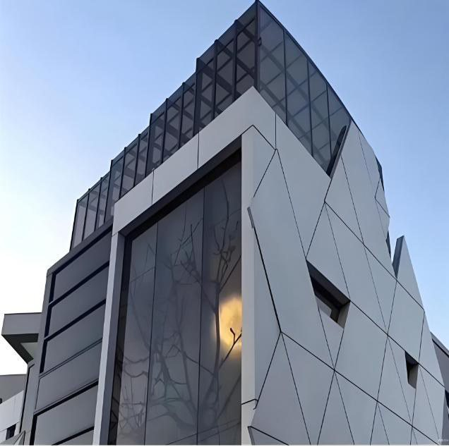

Architectural powder is sold on a number of years. The number only means something when it is tied to a chemistry, a standard class and a film build. This is how the P-series is structured.
| Series | Chemistry | Tested to (not certified) | Design life | Typical use |
|---|---|---|---|---|
| P1000 | Standard polyester | AAMA 2603 / QUALICOAT I | Up to 10 years | Inland façades, general architecture |
| P1500 | Super-durable polyester | AAMA 2604 / QUALICOAT II | Up to 15 years | Curtain wall, coastal, high UV |
| P2000 | Fluorocarbon | AAMA 2605 / QUALICOAT III | Up to 20 years | Landmarks, extreme exposure |
Design life is a target tied to the test report, the pre-treatment and the film build in the specification. It is not a warranty on its own.
Reading that column correctly：it is the test standard our products are measured against, not a certificate number. We hold no AAMA or QUALICOAT product certificate — we hold the test reports.
A polyester that holds colour and gloss in normal inland exposure. The cost-effective answer for window systems and panels that are not facing salt or desert sun.
Higher-grade polyester with a stronger light-stabiliser package, tested to the AAMA 2604 / QUALICOAT II level. The default choice for curtain wall and coastal projects.
Fluorocarbon chemistry, tested to AAMA 2605 / QUALICOAT III — the top exterior class. Specified where the façade is the brand: landmarks, airports, extreme UV and salt.
